与公开模型的 12 帧对比
数据与打分同 Point Tracking 四模型对比页（s4d_sample100 的 100 段、第 0 帧可见前景点做 query、整段 Sim(3) RANSAC 对齐、固定阈值取 avg_pts），只把 --num_frames 从 64 改成 12：每段只取前 12 帧（源帧 0–44，7.5 fps 约 1.5 s），和 s4d_train 训练用的 12 帧片段对齐；五个模型吃同样的 12 帧。s4d_train 在这里是纯推理：不给真值 query 3D、不给真值相机，链从模型自己对 query 像素的 3D 估计出发，下一跳的位置用 camera_head 预测的相机投影，输入缩到 512×288。100 段里 67 段的世界在 s4d_train 的训练集里（其余模型没见过任何一段），所以表格以 29 段测试集为准。
| 模型 | avg_pts 测试集 29 段 | avg_pts_dyn 测试集 | avg_pts 全部 100 段 | avg_pts_dyn 全部 | 参考：64 帧 avg_pts 全部 100 段，原对比页 |
|---|---|---|---|---|---|
| s4d_train | 0.589 | 0.599 | 0.604 | 0.609 | — |
| 4RC | 0.486 | 0.467 | 0.466 | 0.454 | 0.269 |
| TraceAnything | 0.259 | 0.282 | 0.246 | 0.250 | 0.148 |
| Any4D | 0.425 | 0.451 | 0.404 | 0.421 | 0.200 |
| Point4D | 0.611 | 0.606 | 0.571 | 0.561 | 0.258 |
12 帧的分数不能和 64 帧直接比。阈值是固定米制、按整段对齐后算的；轨迹只有 1.5 s 时漂移还没积累，所有模型的分数都比 64 帧高。各列只在同一行内、同一列内比较。
每段一张卡：封面是第 0 帧（翻回正向），点封面或 3D 打开查看器，里面是 GT（白）与五个模型 Sim(3) 对齐后的 300 条轨迹、GT 相机视锥；数值是该段各模型的 avg_pts，蓝色为该段最高。测试集的段排在前面。
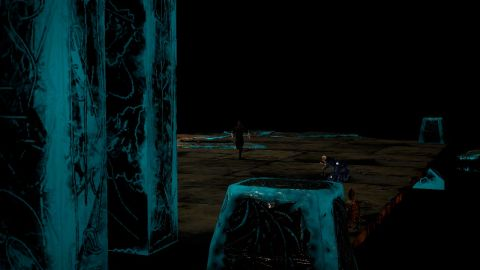
a2_s29_w3_cam1静态测试集
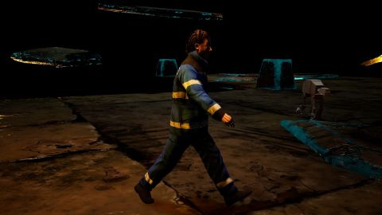
a2_s9_w5_cam0跟拍测试集
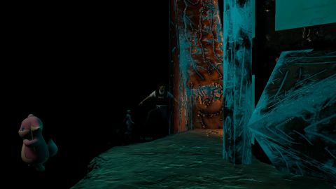
a3_s12_w2_cam1静态测试集
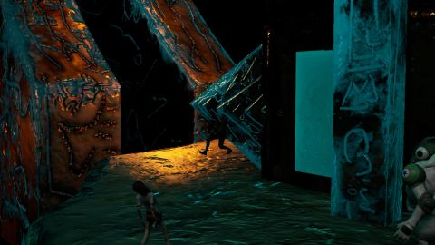
a3_s32_w5_cam1静态测试集
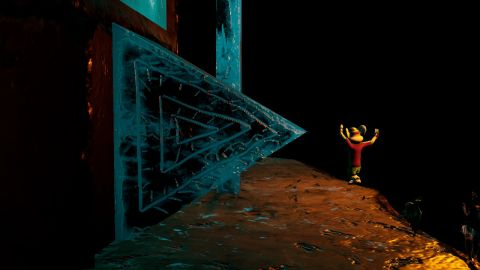
a3_s37_w4_cam1静态测试集
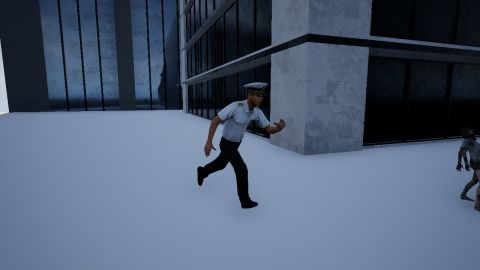
fa_s10_w3_cam0跟拍测试集
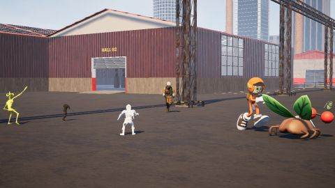
fa_s11_w3_cam1静态测试集

fa_s26_w7_cam1静态测试集
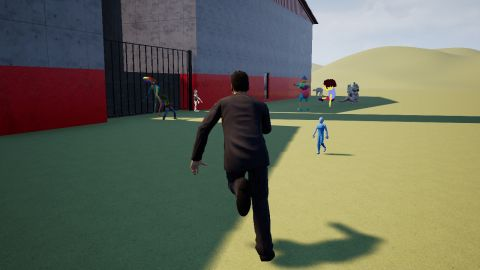
fa_s31_w6_cam0跟拍测试集

fa_s32_w2_cam1静态测试集

fa_s32_w4_cam0跟拍测试集

fv_s28_w4_cam0跟拍测试集
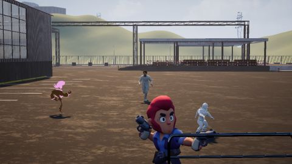
fv_s35_w1_cam1静态测试集
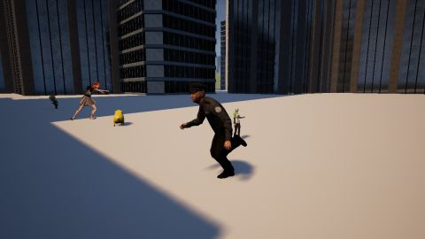
fv_s35_w4_cam0跟拍测试集
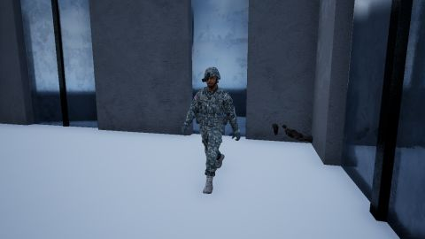
fv_s36_w7_cam0跟拍测试集
nq_s27_w1_cam0跟拍测试集

nq_s29_w7_cam1静态测试集
nq_s32_w1_cam0跟拍测试集
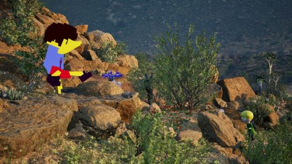
nq_s8_w3_cam1静态测试集
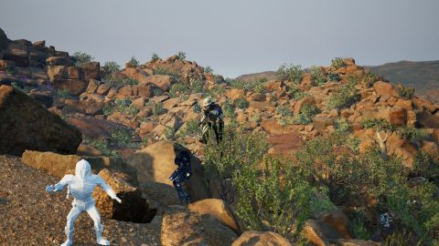
nq_s9_w2_cam1静态测试集
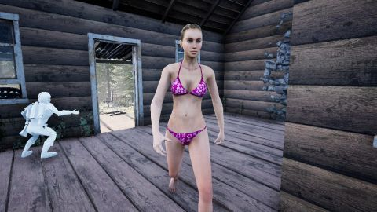
ruc5_s23_w0_cam0跟拍测试集
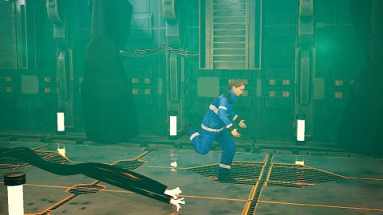
sf_s16_w2_cam1静态测试集
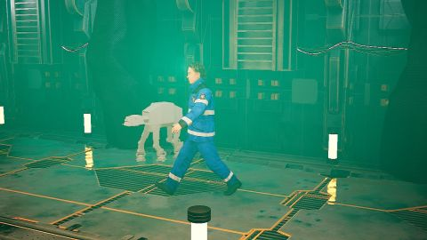
sfc5_s24_w0_cam1静态测试集
sfc5_s29_w1_cam0跟拍测试集
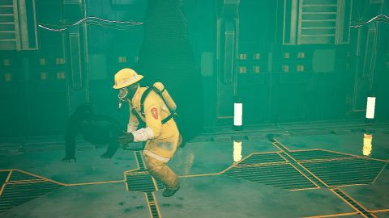
sfc5_s29_w6_cam1静态测试集

sfc5_s31_w3_cam0跟拍测试集
sfc5_s39_w0_cam0跟拍测试集
sfc5_s49_w1_cam0跟拍测试集

sfc5_s53_w0_cam0跟拍测试集
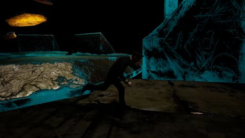
a2_s28_w6_cam0跟拍穿地世界，已剔出划分
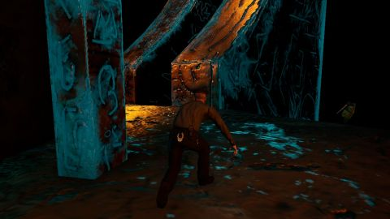
a3_s26_w6_cam0跟拍穿地世界，已剔出划分
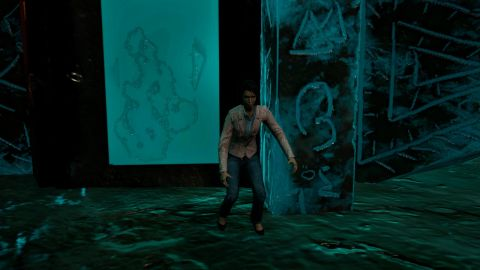
a3_s37_w0_cam0跟拍穿地世界，已剔出划分
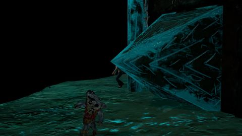
a3_s37_w0_cam1静态穿地世界，已剔出划分
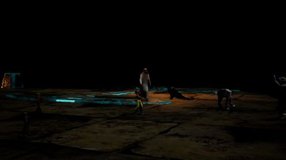
a2_s11_w0_cam1静态训练集已见
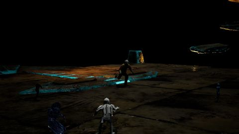
a2_s23_w6_cam1静态训练集已见
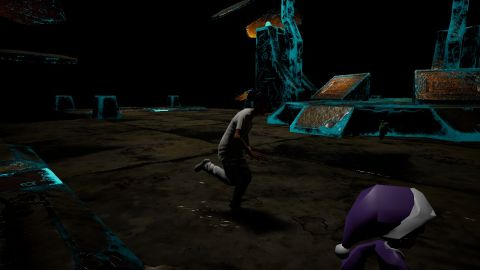
a2_s25_w3_cam0跟拍训练集已见
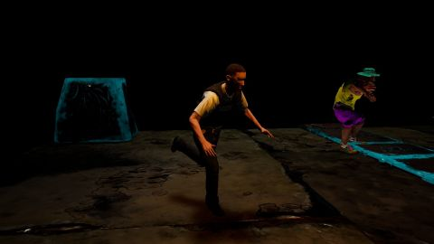
a2_s30_w4_cam0跟拍训练集已见
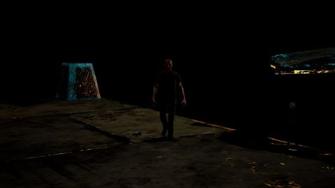
a2_s30_w7_cam1静态训练集已见
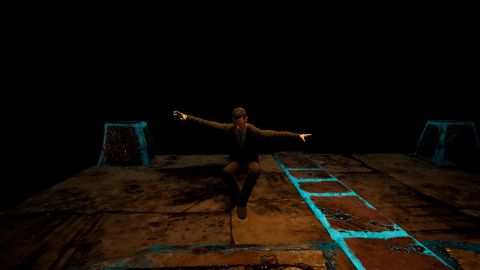
a2_s8_w5_cam0跟拍训练集已见
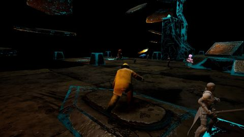
a2_s9_w6_cam0跟拍训练集已见
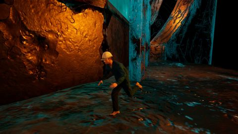
a3_s14_w2_cam0跟拍训练集已见
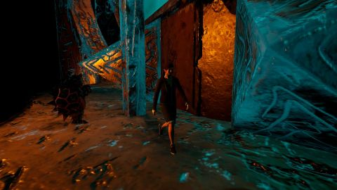
a3_s30_w5_cam0跟拍训练集已见
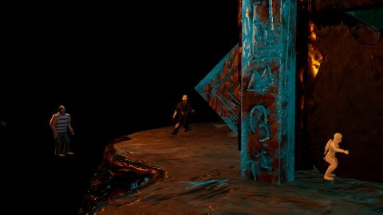
a3_s33_w1_cam1静态训练集已见
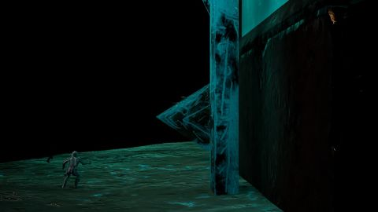
a3_s38_w6_cam1静态训练集已见
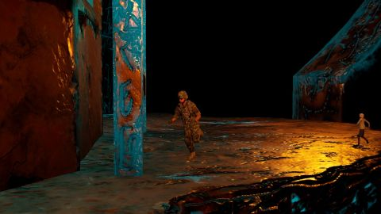
a3_s7_w3_cam1静态训练集已见
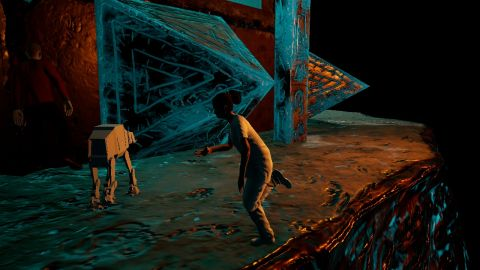
a3_s8_w6_cam0跟拍训练集已见
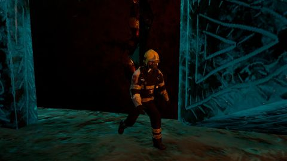
a3_s9_w0_cam0跟拍训练集已见
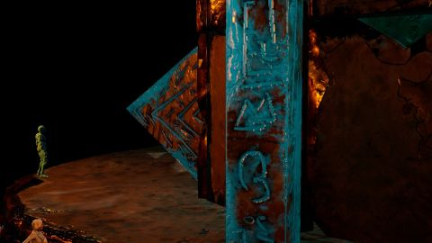
a3_s9_w0_cam1静态训练集已见
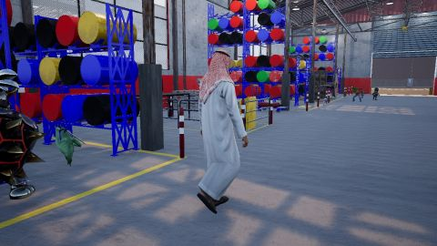
fa_s10_w0_cam0跟拍训练集已见
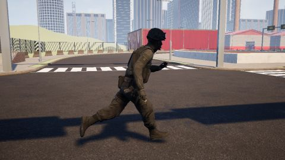
fa_s11_w1_cam0跟拍训练集已见
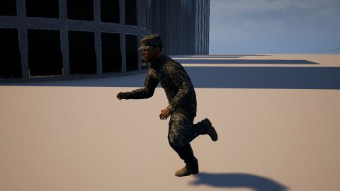
fa_s12_w3_cam0跟拍训练集已见
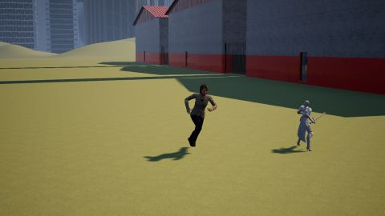
fa_s13_w1_cam1静态训练集已见
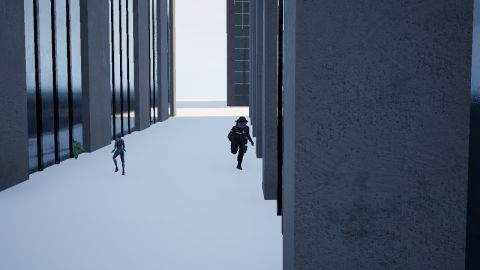
fa_s13_w4_cam1静态训练集已见
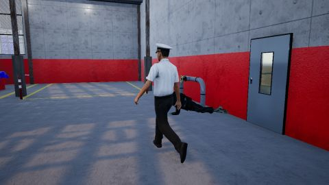
fa_s26_w0_cam0跟拍训练集已见
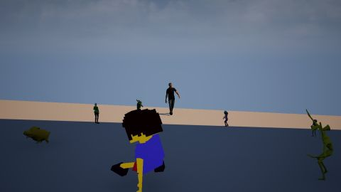
fa_s30_w7_cam1静态训练集已见
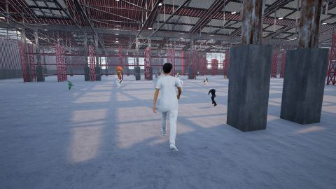
fa_s32_w7_cam0跟拍训练集已见
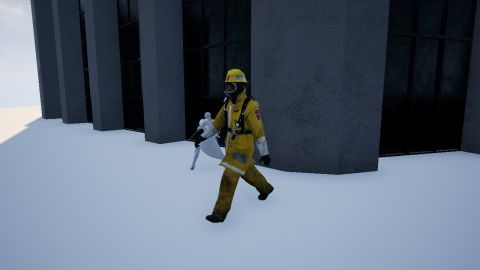
fa_s33_w0_cam0跟拍训练集已见
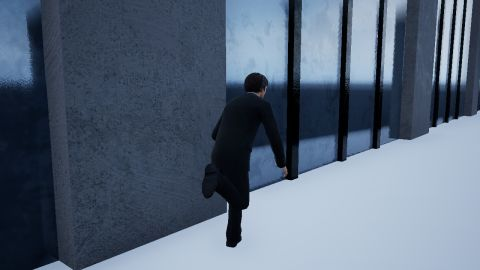
fa_s33_w2_cam0跟拍训练集已见
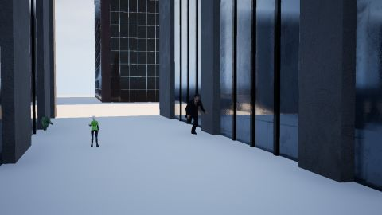
fa_s33_w2_cam1静态训练集已见
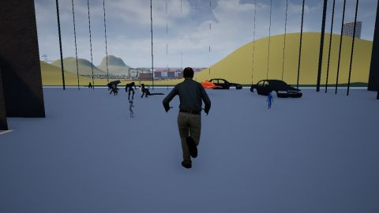
fv_s28_w1_cam0跟拍训练集已见
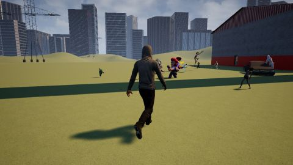
fv_s29_w0_cam0跟拍训练集已见
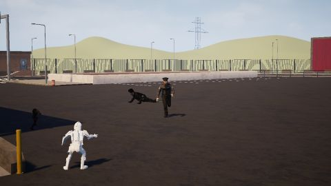